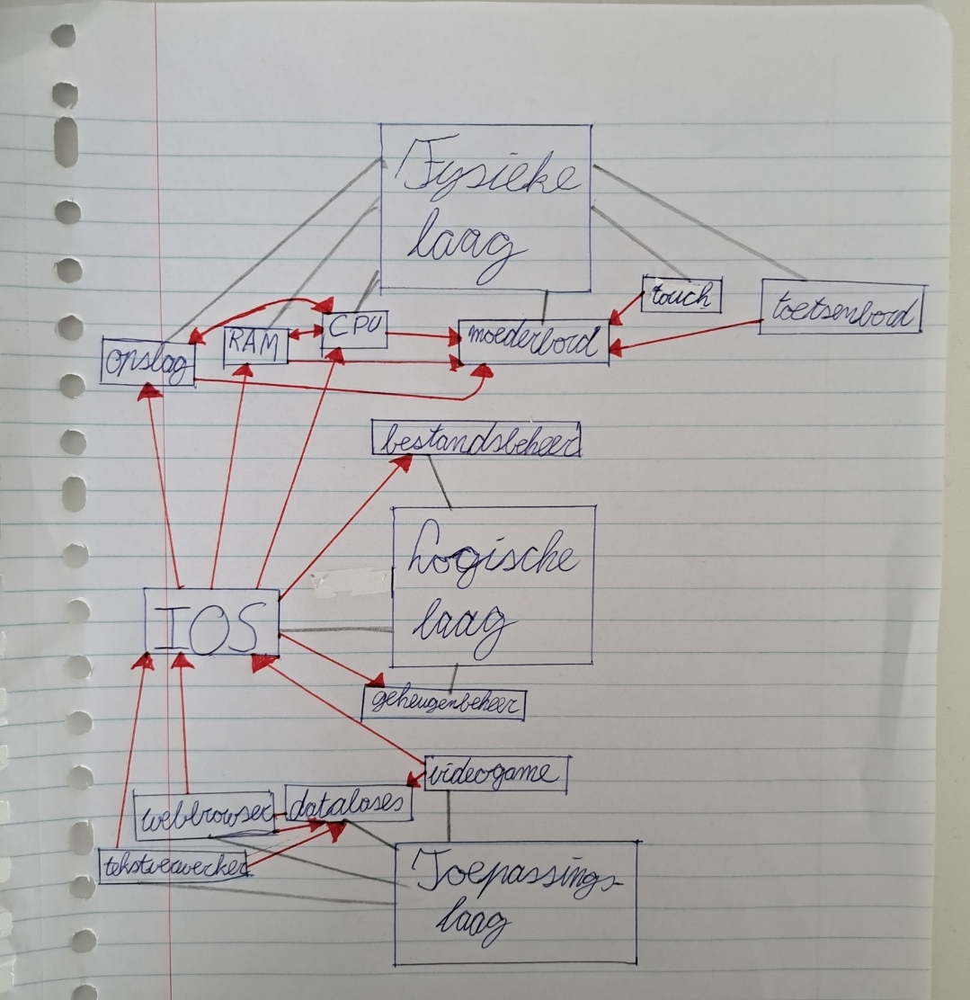

Algemene informatie over 3-lagenmodel
Het 3-lagenmodel van een besturingssysteem (OS) is een conceptueel model dat wordt gebruikt om de organisatie en functionaliteit van een besturingssysteem in een computersysteem te beschrijven. Het model verdeelt het besturingssysteem en zijn taken in drie hoofdlagen: de fysieke laag, de logische laag en de toepassingenlaag. Het 3-lagenmodel van een besturingssysteem helpt bij het begrijpen van de rol van het besturingssysteem binnen een computersysteem en hoe het fungeert als een tussenlaag die hardwarebeheer mogelijk maakt en softwaretoepassingen in staat stelt om efficiënt op de hardware te draaien. Het model dient als een conceptueel kader voor het begrijpen van de interactie en verantwoordelijkheden van verschillende componenten in een computeromgeving.
Communicatie tussen de lagen
Van de fysieke laag naar de logische laag:
De fysieke laag, bestaande uit hardwarecomponenten zoals de CPU, geheugen, opslagmedia en randapparatuur, communiceert met de logische laag via hardwareinterfaces en bussen. Bijvoorbeeld, de CPU communiceert met het besturingssysteem door middel van instructies en registers. Het kan verzoeken om geheugen te lezen of schrijven, instructies uit te voeren en te communiceren met randapparatuur zoals toetsenborden en muizen via de hardwarebussen.
Van de logische laag naar de fysieke laag:
Het besturingssysteem in de logische laag coördineert en beheert de interactie tussen de hardwarecomponenten. Het bepaalt welke processen toegang hebben tot de CPU en het geheugen en hoe hardwarebronnen worden toegewezen. Het besturingssysteem kan verzoeken van toepassingen doorgeven aan de fysieke laag om bijvoorbeeld gegevens van opslagmedia te lezen of te schrijven, geheugenruimte toewijzen aan processen of gegevens naar randapparatuur sturen.
Van de logische laag naar de toepassingslaag:
De logische laag communiceert met de toepassingenlaag door diensten en interfaces aan te bieden aan softwaretoepassingen. Dit omvat API's (Application Programming Interfaces) en systeemoproepen waarmee toepassingen toegang krijgen tot besturingssysteembronnen en -functies. Toepassingen kunnen via deze interfaces verzoeken indienen om bestanden te lezen, schrijven, processen te starten, geheugen toe te wijzen en toegang te krijgen tot randapparatuur.
Van de toepassingslaag naar de logische laag
Toepassingen in de toepassingenlaag communiceren met het besturingssysteem door verzoeken in te dienen via de beschikbare API's en systeemoproepen. Deze verzoeken omvatten taken zoals het openen van bestanden, het uitvoeren van processen en het beheren van gegevens. Het besturingssysteem verwerkt deze verzoeken, beheert de toegang tot systeembronnen en beantwoordt de aanvragen van de toepassingen.
Verdieping bus
De term "bus" binnen het 3-lagenmodel van een besturingssysteem verwijst naar een cruciaal element in de fysieke laag van een computersysteem. Een bus is een set elektrische geleiders op het moederbord die verschillende hardwarecomponenten met elkaar verbindt en zorgt voor gegevensoverdracht en communicatie tussen deze componenten.
Functie van bussen: Bussen fungeren als de communicatiewegen waarlangs gegevens en controle-informatie worden verzonden tussen hardwarecomponenten. Ze bieden de fysieke verbindingen waarmee de CPU, RAM, opslagapparaten, randapparatuur en andere componenten met elkaar kunnen communiceren.
Soorten bussen: Er zijn verschillende soorten bussen op een moederbord, waaronder de systeembus (system bus), geheugenbus (memory bus), en I/O-bus (input/output bus). Deze bussen hebben verschillende functies en verantwoordelijkheden. De systeembus verbindt bijvoorbeeld de CPU met RAM en andere geheugencomponenten, terwijl de I/O-bus communicatie mogelijk maakt met randapparatuur.
Gegevensoverdracht: Bussen dragen gegevens, adresinformatie en controlecommando's. Ze fungeren als paden voor het verzenden van gegevens tussen componenten, zoals het overbrengen van instructies van de CPU naar RAM of het ophalen van gegevens van opslagapparaten.
Bussnelheid en bandbreedte: Bussen hebben een bepaalde snelheid en bandbreedte, die aangeeft hoeveel gegevens per seconde kunnen worden overgedragen. Een hogere bussnelheid resulteert in een snellere gegevensoverdracht tussen componenten en verbetert de algehele systeemprestaties.
Busarbitrage: Aangezien meerdere componenten toegang willen tot de bus, kan busarbitrage nodig zijn om te bepalen welk apparaat prioriteit krijgt bij de toegang. Het besturingssysteem speelt een rol in het coördineren van deze toegang en het optimaliseren van de busprestaties.
Uitbreidingsbussen: Bovendien zijn er uitbreidingsbussen op het moederbord, zoals de PCI (Peripheral Component Interconnect) en PCIe (PCI Express) bussen, waarmee uitbreidingskaarten zoals grafische kaarten, geluidskaarten en netwerkkaarten kunnen worden aangesloten.
Bussen zijn van vitaal belang voor de werking van een computersysteem omdat ze de communicatie tussen hardwarecomponenten mogelijk maken. In het 3-lagenmodel van het besturingssysteem fungeren bussen als de fysieke verbinding tussen de fysieke laag en de logische laag. Het besturingssysteem in de logische laag coördineert en controleert toegang tot de bus en zorgt voor de optimale werking van het systeem. De efficiëntie en snelheid van bussen hebben invloed op de algehele prestaties van een computer.